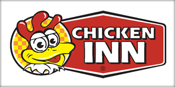

Overview
Purpose
We offer a delightful dining experience centered around well-prepared, delicious chicken dishesthat cater to diverse tastes and preferences.
Audience
Our services are tailored in a way that can suit our customer's needs and desires this includes by offerinf families meals kiddie meals for the kids and quick affordable meals options for young millennials
Branding
Website Logo
Style Guide
Color Palette
Palette URL: https://coolors.co/396e94-e7c24f-a43312-381d2a-aabd8c| Primary | Secondary | Accent 1 | Accent 2 |
|---|---|---|---|
| #095e48 | #273c99 | #eb5d0b | #FFFFFF |
Typography
Heading Font: IM Fell French Canon SC
Paragraph Font: Helvetica, sans-serif
Normal paragraph example
Welcome to Chicken inn: A Chicken Lover's Paradise
Are you a devoted fan of all things chicken? If the mere thought of crispy fried chicken or succulent grilled delights makes your taste buds dance, then Chicken inn is your ultimate destination. Our website is dedicated to celebrating the joy of chicken in all its glorious forms. From mouth-watering recipes and culinary tips to fascinating chicken trivia, we've got it all covered.Discover Irresistible Chicken Recipes
At Chicken in, we understand the universal love for a well-cooked chicken dish. Our recipe collection spans a diverse range, catering to every palate. Whether you're a fan of classic fried chicken, exotic grilled options, or hearty stews, our recipes come with detailed instructions and pro tips to ensure your culinary success. From novice cooks to seasoned chefs, everyone can find inspiration and guidance in our treasure trove of chicken delights.The Art of Perfectly Fried Chicken
One of our focal points is the art of frying the perfect chicken. Learn the secrets behind achieving that golden, crispy exterior while keeping the meat tender and flavorful. We delve into the nuances of seasoning, marinating, and frying techniques that elevate your fried chicken game. Our step-by-step guides and video tutorials make it easy for both beginners and experienced cooks to master the crispy perfection of fried chicken.Grilled Goodness: Elevate Your BBQ Skills
For those who prefer a healthier alternative, our website is a haven for grilled chicken enthusiasts. Explore a variety of marinades, rubs, and grilling methods that bring out the best in your chicken. From summertime BBQ parties to cozy indoor grilling sessions, Chicken inn provides a repertoire of grilled chicken recipes that will make you the hero of any gathering.Chicken Trivia: Beyond the Plate
Chicken inn isn't just about recipes; it's a celebration of everything chicken. Dive into our chicken trivia section to discover fascinating facts about the history, cultural significance, and varieties of chickens around the world. Impress your friends with your newfound knowledge about poultry breeds, egg facts, and the global impact of chicken on cuisines.From Farm to Fork: Understanding Chicken Sourcing
Ever wondered about the journey of chicken from the farm to your plate? Our 'From Farm to Fork' section takes you on a virtual tour of the chicken sourcing process. Learn about sustainable farming practices, ethical considerations, and the importance of knowing where your food comes from. Chicken inn promotes awareness and responsible choices for chicken enthusiasts who care about the source of their favorite protein.Join the Chicken inn Community: Share Your Chicken Tales
Chicken inn is more than just a website; it's a community of chicken lovers. Join our forums to share your favorite recipes, kitchen triumphs, and even the occasional cooking mishap. Connect with fellow chicken enthusiasts, exchange tips, and be part of a community that shares your passion for poultry. Whether you're a seasoned chef or a kitchen novice, everyone is welcome in the Chicken inn community.Chicken inn Catering: Bringing Chicken Delights to Your Events
Planning an event and want to treat your guests to the best chicken dishes? Explore our catering services for a Chicken inn experience at your gatherings. From corporate events to family celebrations, our catering team ensures that the spotlight is on delicious chicken creations that leave a lasting impression. Let Chicken inn be the secret ingredient to making your event unforgettable.Colored paragraph example
Main Topics:
1. Irresistible Chicken Recipes
2. The Art of Perfectly Fried Chicken
3. Grilled Goodness: Elevate Your BBQ Skills
4. Chicken Trivia: Beyond the Plate
5. From Farm to Fork: Understanding Chicken Sourcing
6. Join the Chicken inn Community: Share Your Chicken Tales
7. Chicken inn Catering: Bringing Chicken Delights to Your Events
Navigation
Site Map
Content
Home page
[Written copy for the home page here]
Images for the Home page
[Page 2]
[Written copy for the Page 2 here]
Images for the Page 2
[Page 3]
[Written copy for the Page 3 here]
Images for the Page 3
Wireframes
Create three wireframes for your site. One for each page and list them here
Home
[Any additional details about home that the wireframe does not make clear]
[Page 2]
[Any additional details about page 2 that the wireframe does not make clear]
[Page 3]
[Any additional details about page 3 that the wireframe does not make clear]